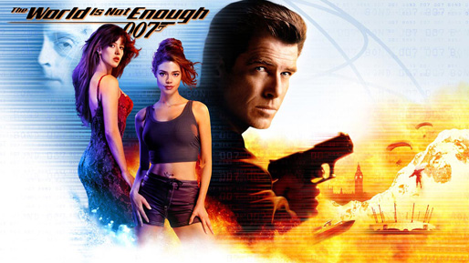
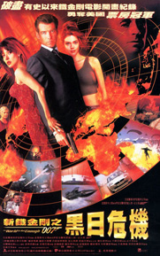
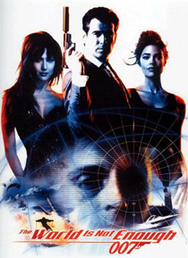
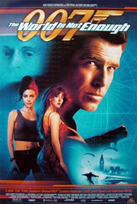
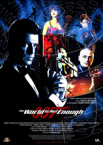
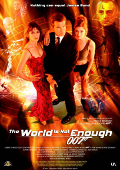
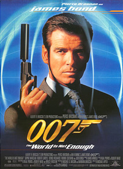
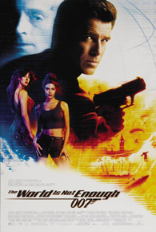

The World Is Not Enough (1999) |
||||
 |
||||
Directed by |
- |
Michael Apted | ||
Produced by |
- |
Michael G. Wilson Barbara Broccoli |
||
Screenplay by |
- |
Neal Purvis Robert Wade Bruce Feirstein |
||
Cinematography |
- |
Adrian Biddle | ||
Edited by |
- |
Jim Clark | ||
Production Designer |
- |
Peter Lamont | ||
Production Company |
- |
Eon Productions Metro-Goldwyn-Mayer |
||
Distributed by |
- |
MGM Distribution Co. (US) United International Pictures (International) |
||
Release date |
- |
8 November 1999 (Los Angeles premiere) | ||
Running time |
- |
128 minutes | ||
Theme Song |
- |
"The World Is Not Enough" (David Arnold with Don Black) | ||
Sung by |
- |
Garbage | ||
Music |
- |
David Arnold | ||
Title Sequence |
- |
Daniel Kleinman | ||
Budget |
- |
$125 million | ||
Box office |
- |
$362 million | ||
Cast |
||||
Pierce Brosnan |
- |
James Bond | ||
Sophie Marceau |
- |
Elektra King: Oil heiress who is seemingly being targeted by Renard, the world's most wanted terrorist. | ||
Robert Carlyle |
- |
Victor "Renard" Zokas: Former KGB agent turned high-tech terrorist. Years ago, Renard kidnapped Elektra King in exchange for a massive ransom demand. The ordeal resulted in a failed assassination attempt by MI6 and left Renard with a bullet lodged in his brain which renders him impervious to pain as well as slowly killing off his other senses. Renard now seeks revenge on both the King family and MI6 for his death sentence, as the bullet will kill him when the bullet reaches the centre of the brain. | ||
Denise Richards |
- |
Dr. Christmas Jones: American nuclear physicist assisting Bond in his mission. | ||
Robbie Coltrane |
- |
Valentin Zukovsky: Former Russian mafia boss and Baku casino owner. Bond initially seeks out Zukovsky for intel on Renard and is subsequently aided by him when Zukovsky's nephew falls into Renard's captivity. Coltrane reprises his role from GoldenEye. | ||
Judi Dench |
- |
M: The head of MI6. | ||
Michael Kitchen |
- |
Bill Tanner: M's Chief of Staff. | ||
Colin Salmon |
- |
Charles Robinson: M's Deputy Chief of Staff. | ||
Desmond Llewelyn |
- |
Q: MI6's "quartermaster" who supplies Bond with multi-purpose vehicles and gadgets useful for the latter's mission. | ||
John Cleese |
- |
R: Q's assistant and successor. The character is never formally introduced as "R" – This was simply an observation on Bond's part: "If you're Q ... does that make him R?" | ||
Samantha Bond |
- |
Miss Moneypenny: M's secretary. | ||
Serena Scott Thomas |
- |
Dr. Molly Warmflash: MI6 agent and doctor assigned to examine Bond, as well as describing Renard's seeming invincibility due to the terminal bullet in his brain that will kill him when it reaches the brain's centre. | ||
John Seru |
- |
Gabor: Elektra King's bodyguard who is seen accompanying King wherever she travels. | ||
Ulrich Thomsen |
- |
Sasha Davidov: Elektra King's head of security in Azerbaijan and Renard's secret liaison. | ||
Goldie |
- |
Bull: Valentin Zukovsky's gold-toothed and gold-haired bodyguard. Although listed as 'Bull' in the credits, Zukovsky refers to him as 'Bullion' in the film. | ||
Maria Grazia Cucinotta |
- |
Giulietta da Vinci (credited in the film as "Cigar Girl"): An experienced assassin working for Renard, who appears as a woman who supplies Bond and the banker with cigars during their meeting. | ||
David Calder |
- |
Sir Robert King: Elektra's father and an oil tycoon who is later killed during a bomb attack on MI6 headquarters. | ||
Sean Cronin |
- |
Renard's Henchman (uncredited). | ||
Synopsis |
||||
MI6 agent James Bond arrives at a Swiss bank in Bilbao, Spain to retrieve money for Sir Robert King, a British oil tycoon and friend of M. Bond tells the banker that King was buying a report stolen from an MI6 agent who was killed for it, and wants to know who killed him. The banker is killed by his assistant before he can reveal the assassin's name. Bond escapes from the banker's office with the money, but it is revealed to be booby-trapped; Sir Robert is killed by an explosion inside MI6 headquarters back in London. Bond gives chase to the assistant/assassin on a Q-modified speedboat on the Thames to the Millennium Dome, where she attempts to escape via hot air balloon. Bond offers her protection, but she refuses and blows up the balloon, killing herself. Although injured falling from the balloon, Bond is cleared by the MI6 doctor, and traces the recovered money to Viktor "Renard" Zokas, a KGB agent-turned-terrorist. Following an earlier attempt on his life by MI6, Renard was left with a bullet in his brain which is gradually destroying his senses, making him immune to pain until he dies. M assigns Bond to protect King's daughter Elektra against Renard, who had previously abducted her. Bond flies to Azerbaijan, where Elektra is overseeing the construction of an oil pipeline. During a tour of the pipeline's proposed route in the mountains, Bond and Elektra are attacked by a hit squad in armed, paraglider-equipped snowmobiles. Despite being unarmed, Bond is able to dispatch the snowmobiles by using the terrain to his advantage. Bond visits Valentin Zukovsky at a casino to acquire information about Elektra's attackers; he deduces that Elektra's head of security, Davidov, is secretly in league with Renard. Bond kills Davidov and boards a plane bound for a Russian ICBM base in Kazakhstan. He poses as a Russian nuclear scientist, meets American nuclear physicist Christmas Jones, and enters the silo. Inside, Renard is removing the GPS locator card and weapons-grade plutonium from a nuclear bomb. Before Bond can kill him, Jones blows his cover. Renard drops a hint that he and Elektra are collaborating and flees with the plutonium, while Bond and Jones escape the exploding silo with the locator card. Back in Azerbaijan, Bond discloses to M that Elektra may not be as innocent as she seems. An alarm sounds while he is handing M the locator card as proof of the theft, which reveals that the stolen bomb from Kazakhstan is attached to an inspection rig heading towards the oil terminal. Bond and Jones enter the pipeline to deactivate the bomb, and Jones discovers that half of the plutonium is missing. They both jump clear of the rig, a large section of pipeline is destroyed, and they are presumed killed. Back at the command centre, Elektra reveals she and Renard are conspirators and that she killed her father as revenge for using her as bait for Renard. She abducts M, whom she resents for advising her father not to pay the ransom money, and imprisons her in the Maiden's Tower. Bond accosts Zukovsky at his caviar factory in the Caspian Sea, which is then attacked by Elektra's sawing helicopters. Later, Zukovsky reveals his arrangement with Elektra was in exchange for the use of a submarine, currently being captained by Zukovsky's nephew, Nikolai. The group goes to Istanbul, where Jones realises that if Renard were to insert the stolen plutonium into the submarine's nuclear reactor, the resulting nuclear explosion would destroy Istanbul, sabotaging the Russians' oil pipeline in the Bosphorus. Bond then receives a signal from the locator card M has activated using a clock battery, just before Zukovsky's underling, Bullion blows up the command centre. Bond and Jones are captured by Elektra's henchmen. Jones is taken aboard the submarine. Bond is taken to the tower, where Elektra tortures him with a garrote. Zukovsky and his men seize the tower, but Zukovsky is shot by Elektra, freeing Bond with his cane gun as his last act. Bond frees M and kills Elektra. Bond dives after the submarine, boards it, and frees Jones. Following a fight, the submarine hits the bottom of the Bosphorus, causing its hull to rupture. Bond catches up with Renard and kills him after a lengthy fight in the submarine's reactor room. Bond and Jones escape from the submarine via the torpedo launcher, leaving the flooded reactor to detonate safely underwater. |
||||
Casting |
||||
Denise Richards stated that she liked the role of Dr. Christmas Jones because it was "brainy", "athletic" and had "depth of character, in contrast to Bond girls from previous decades". Richards stated that a lot of reviewers "made fun of" the character's attire but that "These Bond girls are so outrageous and if I did really look like a scientist, the Bond fans would have been disappointed." Writer Ben Bussey stated in a Yahoo! Movies article that "it's clear that Eon were never aiming especially high with this character" since the company 'reportedly' auditioned Geri Halliwell and Tiffani Thiessen for the role. Robbie Coltrane and Robert Carlyle had previously appeared together in Cracker, although they shared no screen time in The World Is Not Enough. The film would be Desmond Llewelyn's final performance as Q. Although the actor was not officially retiring from the role, the Q character was training his eventual replacement in this film. Tragically, Llewelyn was killed in a car accident shortly after the film's premiere. |
||||
Filming |
||||
Joe Dante and then Peter Jackson were offered the opportunity to direct the film. Barbara Broccoli enjoyed Jackson's Heavenly Creatures, and a screening of The Frighteners was arranged for her. She disliked the latter film, however, and showed no further interest in Jackson. Jackson, a lifelong Bond fan, remarked that as Eon tended to go for less famous directors, he would likely not get another chance to direct a Bond film after The Lord of the Rings. The pre-title sequence lasts for about 14 minutes, the longest pre-title sequence in the Bond series to date. Initially the film was to be released in 2000, rumoured to be titled "Bond 2000". Other rumoured titles included "Death Waits for No Man", "Fire and Ice", "Pressure Point" and "Dangerously Yours". The title The World Is Not Enough is an English translation of the Latin phrase Orbis non sufficit, which in real life was the motto of Sir Thomas Bond. In the novel On Her Majesty's Secret Service and its film adaptation, this is revealed to be the Bond family motto. The phrase originates from the epitaph of Alexander the Great. The pre-title sequence begins in Bilbao, Spain, featuring the Guggenheim Museum. After the opening scene, the film moves to London, showcasing the SIS Building and the Millennium Dome on the Thames. Following the title sequence, Eilean Donan castle in Scotland is used by MI6 as a location headquarters. Other locations include Baku, Azerbaijan, the Azerbaijan Oil Rocks and Istanbul, Turkey, where Maiden's Tower and Küçüksu Palace are shown. Principal photography began on January 17, 1999, and lasted until June of that year. The studio work for the film was shot as usual in Pinewood Studios, including Albert R. Broccoli's 007 Stage. Bilbao, Spain was used briefly for the exterior of the Swiss bank and flyover-bridge adjacent to the Guggenheim Museum. In London outdoor footage was shot of the SIS Building and Vauxhall Cross with several weeks filming the boat chase on the River Thames eastwards towards the Millennium Dome, Greenwich. The canal footage of the chase where Bond soaks the parking wardens was filmed at Wapping and the boat stunts in Millwall Dock and under Glengall Bridge were filmed at the Isle of Dogs. Chatham Dockyard was also used for part of the boat chase. Stowe School, Buckinghamshire, was used as the site of the King family estate on the banks of Loch Lomond. Filming continued in Scotland at Eilean Donan Castle which was used to depict the exterior of MI6 temporary operations centre "Castle Thane". The skiing chase sequence in the Caucasus was shot on the slopes of Chamonix, France. Filming of the scene was delayed by an avalanche; the crew helped in the rescue operation. The interior (and single exterior shot) of L'Or Noir casino in Baku, Azerbaijan, was shot at Halton House, the officers' mess of RAF Halton. RAF Northolt was used to depict the airfield runway in Azerbaijan. Zukovsky's quayside caviar factory was shot entirely at the outdoor water tank at Pinewood. The exterior of Kazakhstan nuclear facility was shot at the Bardenas Reales, in Navarre, Spain, and the exterior of the oil refinery control centre at the Motorola building in Groundwell, Swindon. The exterior of the oil pipeline was filmed in Cwm Dyli, Snowdonia, Wales while the production teams shot the oil pipeline explosion on Hankley Common, Elstead, Surrey. Istanbul, Turkey, was used in the film, and Elektra King's Baku villa was actually in the city, also using the famous Maiden's Tower which was used as Renard's hideout in Turkey. The underwater submarine scenes were filmed in the Bahamas. The BMW Z8 driven by Bond in the film was the final part of a three-film product placement deal with BMW (which began with the Z3 in GoldenEye and continued with the 750iL in Tomorrow Never Dies) but, due to filming preceding release of the Z8 by a few months, several working mock-ups and models were manufactured for filming purposes. |
||||
Additional Posters |
||||
|
|
  |
|
||
   |
||||
   |
||||